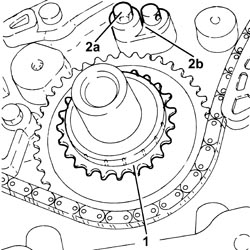
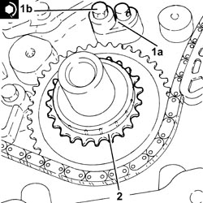

1032A10 CHAIN GEARS AND TIMING SYSTEM COMPONENTS R R
- Path
- Procedures > 10 ENGINE > 1032 TIMING SYSTEM > 1032A CHAIN TIMING SYSTEM > 1032A10 CHAIN GEARS AND TIMING SYSTEM COMPONENTS R R
- Kind
- repair procedure (removal / refitting; the operation number is the code)
- Applies to
- engines: 2.2; all production periods
- Interactive page
- https://sloeber94.github.io/elrnDB-fCrm/en/#/194000270
Applies to: engines: 2.2; all production periods
 Removing
Removing
 Refitting
RefittingOp. 4450B04 RIGHT FRONT WHEEL - R.R
Op. 7055B66 ENGINE COMPARTMENT DUST COVER IN RIGHT FRONT WHEEL ARCH - R.R.
Op. 1032A12 TIMING SYSTEM DRIVE CHAIN - R.R
1. Remove the timing drive pulley.
2. Undo the bolt (2a) and remove the timing chain (2b) lubrication jet.

Applies to: engines: 2.2; all production periods
Refitting
Removing1. Position the timing chain lubrication jet (1a) in its housing and secure it tightening the bolt (1b) to the recommended torque.
Component | Fastening | dia | Value (daNm) | Validity |
|---|---|---|---|---|
Timing chain lubrication jet | Bolt | M6 x 1 | (engine crankcase side) 1.0 | 2.2 |
2. Place the timing drive pulley in its housing.

Applies to: engines: 2.2; all production periods
Op. 1032A12 TIMING SYSTEM DRIVE CHAIN - R.R
Op. 7055B66 ENGINE COMPARTMENT DUST COVER IN RIGHT FRONT WHEEL ARCH - R.R.
Op. 4450B04 RIGHT FRONT WHEEL - R.R
Op. 0010T11 ENGINE OIL - CHECK LEVEL AND TOP UP, IF NECESSARY
Topics linked from this page (4)
- 0010T11 ENGINE OIL - CHECK LEVEL AND TOP UP, IF NECESSARY
- 1032A12 TIMING SYSTEM DRIVE CHAIN - R.R
- 4450B04 RIGHT FRONT WHEEL - R.R
- 7055B66 ENGINE COMPARTMENT DUST COVER IN RIGHT FRONT WHEEL ARCH - R.R.